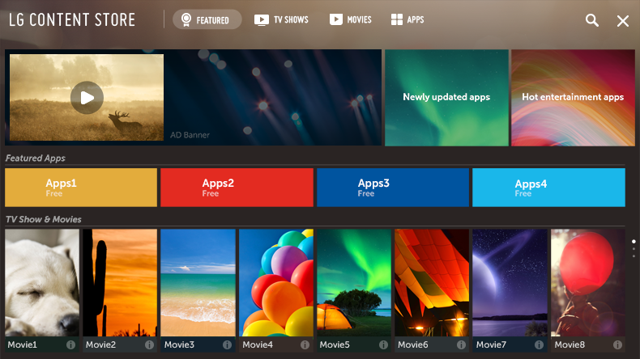

Uso de LG Content Store
Puede navegar de forma rápida y sencilla por Programas de TV, Películas y mucho más contenido, que podrá ver inmediatamente.
También puede descargar y utilizar aplicaciones de diferentes categorías, como educación, ocio, estilo de vida, noticias y juegos.
-
Pulse el botón
 del mando a distancia.
del mando a distancia.
- Se inicia LG Content Store.

Esta función solo está disponible en algunos modelos.
Algunas funciones pueden estar limitadas en determinados países.
El contenido puede diferir en función del modelo o el país.
Haga un uso responsable del producto cuando se utilice con menores. A través de este producto, es posible acceder a contenido no apto para menores.
Puede bloquear contenidos en línea inadecuados restringiendo el acceso a algunas aplicaciones.
Configure los ajustes en
 Seguridad Bloqueo de aplicación.
Seguridad Bloqueo de aplicación.
Configure los ajustes en
Seguridad Bloqueo de aplicación.
Contenido recomendado de la pantalla principal
Puede ver las recomendaciones de los contenidos y aplicaciones más populares de cada categoría en la pantalla principal de LG Content Store.
Seleccione un contenido para verlo o elija una aplicación para descargarla.
Esta función solo está disponible en algunos modelos.
Para utilizar esta función se necesita una conexión a Internet.